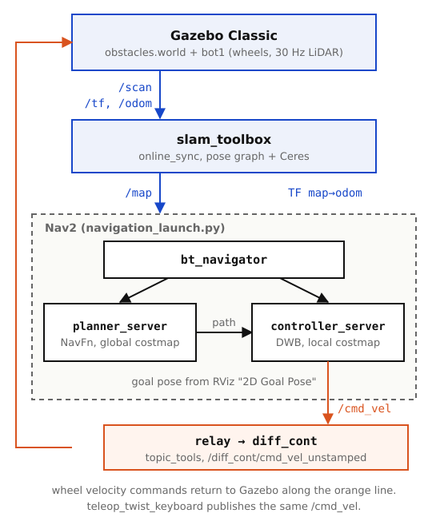
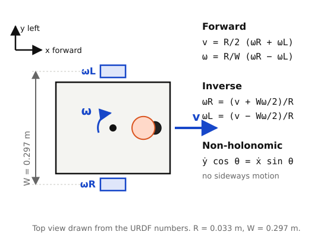
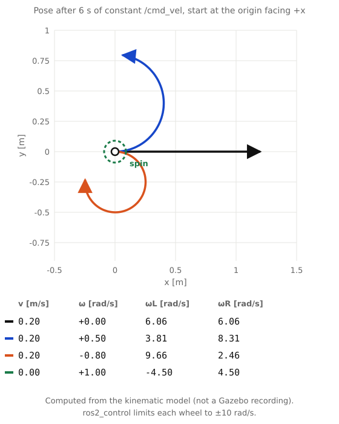
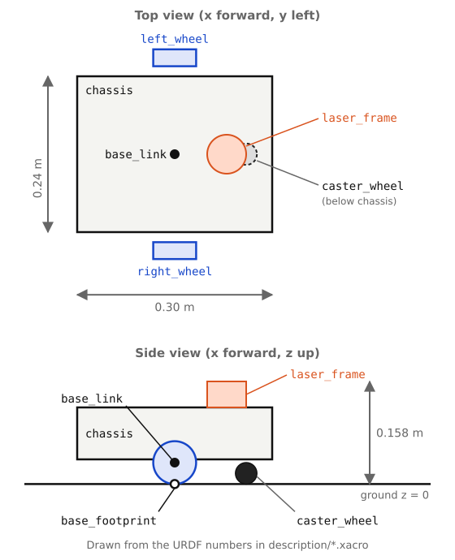
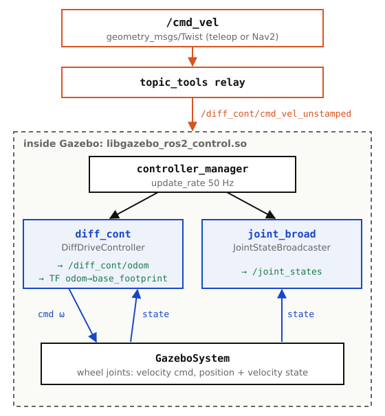
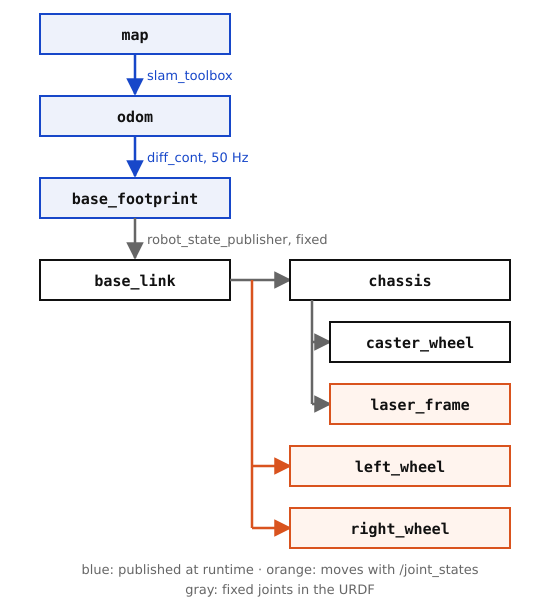

START What You Will Build
This guide builds bot1, a small differential-drive robot, from an empty ROS 2 package to a robot that maps a room with LiDAR SLAM and drives to goals with Nav2. Every file shown below is in the open-source repository, and every snippet is taken from the real files, so you can follow along or just clone it.
Target: Ubuntu 22.04, ROS 2 Humble and Gazebo Classic 11 (the simulator that ships with Humble). The newer Gazebo Sim uses different plugins and is not covered here.

/scan and odometry, SLAM Toolbox builds the map, Nav2 plans and follows a path, and the velocity command returns to the wheels through diff_cont.Install and build
sudo apt update && sudo apt install -y \
ros-humble-desktop \
ros-humble-gazebo-ros-pkgs ros-humble-gazebo-ros2-control \
ros-humble-ros2-control ros-humble-ros2-controllers \
ros-humble-xacro ros-humble-topic-tools \
ros-humble-slam-toolbox ros-humble-nav2-bringup \
ros-humble-teleop-twist-keyboard
mkdir -p ~/ros2_ws/src && cd ~/ros2_ws/src
git clone https://github.com/vinhdo281/bot1.git
cd ~/ros2_ws && colcon build --symlink-install --packages-select bot1
source install/setup.bashPackage layout
bot1/
├── description/ robot.urdf.xacro robot_core.xacro ros2_control.xacro
│ lidar.xacro inertial_macros.xacro
├── config/ my_controllers.yaml mapper_params_online_sync.yaml nav2_params.yaml
├── launch/ rsp.launch.py launch_sim.launch.py rviz.launch.py
├── worlds/ obstacles.world empty.world
├── rviz/ view_bot.rviz
└── maps/ saved mapsPART 1 Differential Drive Kinematics & Non-Holonomic Constraints
A differential drive mobile robot consists of two coaxial actuated drive wheels of radius $R$ separated by track width $W$, complemented by one passive caster wheel for balance. It is subject to a fundamental non-holonomic kinematic constraint:
$$\dot{y}\cos\theta - \dot{x}\sin\theta = 0$$
This equation dictates that the robot cannot instantaneously translate sideways (along its lateral body y-axis). Lateral motion requires rotating first. The relationship between the body velocities and the wheel angular velocities $(\omega_R, \omega_L)$ is expressed by forward kinematics:
$$v = \frac{R}{2}(\omega_R + \omega_L), \quad \omega = \frac{R}{W}(\omega_R - \omega_L)$$

bot1, drawn from the numbers in the URDF. The track width is $W = 0.297\,\text{m}$ and the wheel radius is $R = 0.033\,\text{m}$.Conversely, when a navigation node commands linear velocity $v$ and angular velocity $\omega$ via topic /cmd_vel, the inverse kinematics calculates the required individual wheel speeds:
$$\omega_R = \frac{v + \frac{W}{2}\omega}{R}, \quad \omega_L = \frac{v - \frac{W}{2}\omega}{R}$$
Figure 3 puts numbers on this. Four constant commands are integrated for 6 seconds with the kinematic model, and the table lists the wheel speeds that diff_cont would send for each of them. A pure rotation ($v = 0$) makes the wheels turn in opposite directions, and a gentle turn is just a small speed difference.

/cmd_vel commands. This is a calculation, not a Gazebo recording.ros2_control.xacro clamps each wheel command to $\pm 10\,\text{rad/s}$. With $R = 0.033\,\text{m}$ that is a straight-line maximum of $10 \times 0.033 = 0.33\,\text{m/s}$, and any turn lowers it because one wheel has to run faster. The Nav2 limit used later ($0.26\,\text{m/s}$) stays below this.
PART 2 URDF/Xacro Physics: Why Caster Friction & Inertia Blow Up Gazebo
The model is split into small xacro files so each concern can change on its own. robot.urdf.xacro only declares the two numbers shared with the controller and includes the rest:
<robot xmlns:xacro="http://www.ros.org/wiki/xacro" name="bot1">
<!-- shared with config/my_controllers.yaml: keep them in sync -->
<xacro:property name="wheel_radius" value="0.033"/>
<xacro:property name="wheel_separation" value="0.297"/>
<xacro:include filename="inertial_macros.xacro"/>
<xacro:include filename="robot_core.xacro"/>
<xacro:include filename="ros2_control.xacro"/>
<xacro:include filename="lidar.xacro"/>
</robot>The chassis is a $0.30 \times 0.24 \times 0.08\,\text{m}$ box of 1 kg, each wheel is a 50 g cylinder, and the caster is a small ball. base_footprint is the root of the tree and sits on the ground, base_link is on the wheel axle:
<!-- base_footprint is the URDF root: the robot projected onto the ground -->
<link name="base_footprint"/>
<link name="base_link"/>
<joint name="base_footprint_joint" type="fixed">
<parent link="base_footprint"/>
<child link="base_link"/>
<origin xyz="0 0 ${wheel_radius}" rpy="0 0 0"/>
</joint>
bot1 with its frames, drawn from the URDF numbers. The caster ball reaches the ground exactly: its centre is at $z = -R + r_{caster}$ relative to base_link.A common pitfall in Gazebo simulation is when the robot bounces violently, shakes, or tips over during turns. This is caused by improper caster friction and incorrect inertia tensors.
1. Caster contact friction:
In standard Gazebo ODE physics, default surface friction is $\mu_1 = \mu_2 = 1.0$. A caster ball with default friction creates strong lateral resistance whenever the robot tries to yaw, so the wheels drag, slip and vibrate. Set the friction of the ball to near zero:
<!-- robot_core.xacro: the caster is a ball that touches the ground -->
<gazebo reference="caster_wheel">
<material>Gazebo/Black</material>
<!-- CRITICAL: near-zero friction lets the ball slide without dragging -->
<mu1 value="0.001"/>
<mu2 value="0.001"/>
<!-- contact stiffness and damping -->
<kp value="1000000.0"/>
<kd value="1.0"/>
</gazebo>2. Rigid body inertia tensors:
If inertia values are zero or physically inconsistent (violating the triangle inequality $I_{xx} + I_{yy} \ge I_{zz}$), the ODE solver can produce NaN velocities and the robot falls apart. The macros in inertial_macros.xacro compute valid tensors from mass and dimensions, so you never type them by hand:
<!-- inertial_macros.xacro: solid cylinder, rotation axis = local z -->
<xacro:macro name="inertial_cylinder" params="mass length radius *origin">
<inertial>
<xacro:insert_block name="origin"/>
<mass value="${mass}"/>
<!-- Ixx = Iyy = (1/12) m (3 r^2 + h^2), Izz = (1/2) m r^2 -->
<inertia ixx="${(1/12) * mass * (3*radius*radius + length*length)}" ixy="0.0" ixz="0.0"
iyy="${(1/12) * mass * (3*radius*radius + length*length)}" iyz="0.0"
izz="${(1/2) * mass * (radius*radius)}"/>
</inertial>
</xacro:macro>PART 3 Annotated ros2_control & diff_drive_controller Architecture
Rather than custom Gazebo plugins that couple software to the simulator, we use ros2_control with diff_drive_controller. The same controller configuration then runs on real hardware; only the hardware plugin in the URDF changes.
1. Declare the hardware interface in the URDF:
<!-- ros2_control.xacro -->
<ros2_control name="GazeboSystem" type="system">
<hardware>
<plugin>gazebo_ros2_control/GazeboSystem</plugin>
</hardware>
<joint name="left_wheel_joint">
<command_interface name="velocity">
<param name="min">-10</param>
<param name="max">10</param>
</command_interface>
<state_interface name="velocity"/>
<state_interface name="position"/>
</joint>
<!-- right_wheel_joint is identical -->
</ros2_control>
<gazebo>
<plugin name="gazebo_ros2_control" filename="libgazebo_ros2_control.so">
<parameters>$(find bot1)/config/my_controllers.yaml</parameters>
</plugin>
</gazebo>2. Configure the controllers:
# config/my_controllers.yaml
controller_manager:
ros__parameters:
update_rate: 50 # 50 Hz control loop
diff_cont:
type: diff_drive_controller/DiffDriveController
joint_broad:
type: joint_state_broadcaster/JointStateBroadcaster
diff_cont:
ros__parameters:
left_wheel_names: ["left_wheel_joint"]
right_wheel_names: ["right_wheel_joint"]
wheel_separation: 0.297 # effective track width, m
wheel_radius: 0.033 # m
publish_rate: 50.0
odom_frame_id: odom
base_frame_id: base_footprint
open_loop: false # integrate the measured wheel joint states
enable_odom_tf: true # publishes odom -> base_footprint
use_stamped_vel: false # Humble: plain Twist on ~/cmd_vel_unstamped
controller_manager runs both controllers at 50 Hz; diff_cont turns the velocity command into wheel commands and publishes odometry, joint_broad publishes the wheel joint states.3. One velocity entry point
In Humble, diff_cont listens on /diff_cont/cmd_vel_unstamped. Teleop and Nav2 both publish plain /cmd_vel, so launch_sim.launch.py starts a relay between the two. Then neither tool needs a remapping argument:
# launch_sim.launch.py: one entry point for teleop AND Nav2
cmd_vel_relay = Node(
package='topic_tools',
executable='relay',
arguments=['/cmd_vel', '/diff_cont/cmd_vel_unstamped'],
parameters=[{'use_sim_time': True}],
)4. The 2D LiDAR
The scanner is a Gazebo ray sensor on laser_frame, 360 samples over a full circle at 30 Hz, published as sensor_msgs/LaserScan on /scan:
<!-- lidar.xacro (excerpt) -->
<sensor name="laser" type="ray">
<update_rate>30</update_rate>
<ray>
<scan><horizontal>
<samples>360</samples>
<min_angle>-3.14159</min_angle>
<max_angle>3.14159</max_angle>
</horizontal></scan>
<range><min>0.15</min><max>12</max></range>
</ray>
<plugin name="laser_controller" filename="libgazebo_ros_ray_sensor.so">
<ros><remapping>~/out:=scan</remapping></ros>
<output_type>sensor_msgs/LaserScan</output_type>
<frame_name>laser_frame</frame_name>
</plugin>
</sensor>PART 4 Coordinate Transforms (TF2): map -> odom -> base_footprint
Understanding ROS 2 transform frames is vital for navigation:
map: globally fixed frame. It jumps when SLAM detects a loop closure. Published by SLAM Toolbox asmap -> odom.odom: continuous, locally smooth frame that drifts over time because of wheel slip. Published by diff_cont asodom -> base_footprint.base_footprint: the robot projected onto the ground plane ($z = 0$). It is the root of the URDF tree.base_link: rigid body origin on the wheel axle, $0.033\,\text{m}$ abovebase_footprint. Published by robot_state_publisher, likechassis,caster_wheelandlaser_frame.left_wheel,right_wheel: move with the wheel joint states, also through robot_state_publisher.

base_footprint is the URDF root and the controller's base_frame_id: diff_cont adds the single parent odom. If the URDF made base_footprint a child of base_link while the controller also published odom -> base_footprint, the frame would have two parents and the tree would be corrupted.
PART 5 Graph-Based LiDAR SLAM with SLAM Toolbox (Ceres Scan Matcher)
Unlike legacy Gmapping (particle filter), SLAM Toolbox uses pose-graph optimization with the Ceres solver. Each 2D scan is matched against the local map by a correlative scan matcher. When the robot returns to a place it has seen, a loop closure is recognized and a non-linear least-squares optimization adjusts the whole trajectory to remove drift.
The package ships the upstream Humble parameters for the online synchronous mode. The frames match our robot: base_frame is base_footprint, so SLAM Toolbox publishes map -> odom on top of the odometry tree from Part 4:
# config/mapper_params_online_sync.yaml (excerpt)
solver_plugin: solver_plugins::CeresSolver
ceres_linear_solver: SPARSE_NORMAL_CHOLESKY
ceres_preconditioner: SCHUR_JACOBI
odom_frame: odom
map_frame: map
base_frame: base_footprint
scan_topic: /scan
mode: mapping
resolution: 0.05
minimum_time_interval: 0.5
minimum_travel_distance: 0.5
minimum_travel_heading: 0.5
do_loop_closing: true
loop_match_minimum_response_fine: 0.45PART 7 Complete Step-by-Step CLI Execution & Verification
The whole stack runs in five terminals. Source the workspace in each one (source ~/ros2_ws/install/setup.bash).
# 0. Build once
source /opt/ros/humble/setup.bash
cd ~/ros2_ws && colcon build --symlink-install --packages-select bot1
source install/setup.bash
# Terminal 1: Gazebo + robot + controllers + /cmd_vel relay
ros2 launch bot1 launch_sim.launch.py
# another world: ros2 launch bot1 launch_sim.launch.py world:=$HOME/ros2_ws/src/bot1/worlds/empty.world
# Terminal 2: RViz2 (robot model, TF, /scan, /map)
ros2 launch bot1 rviz.launch.py
# Terminal 3: keyboard teleoperation (publishes /cmd_vel)
ros2 run teleop_twist_keyboard teleop_twist_keyboard
# Terminal 4: online SLAM with the package parameters
ros2 launch slam_toolbox online_sync_launch.py use_sim_time:=true \
slam_params_file:=$HOME/ros2_ws/src/bot1/config/mapper_params_online_sync.yaml
# Terminal 5: save the map when the room is covered
ros2 run nav2_map_server map_saver_cli -f ~/ros2_ws/src/bot1/maps/my_world_map
# Terminal 5 (instead): autonomous navigation while SLAM keeps running
ros2 launch nav2_bringup navigation_launch.py use_sim_time:=true \
params_file:=$HOME/ros2_ws/src/bot1/config/nav2_params.yaml
# then click "2D Goal Pose" in RViz and drop a goal in free spaceCheck that everything is alive
ros2 control list_controllers # diff_cont and joint_broad must be "active"
ros2 topic hz /scan # about 30 Hz
ros2 topic hz /diff_cont/odom # about 50 Hz
ros2 topic pub --once /cmd_vel geometry_msgs/msg/Twist "{linear: {x: 0.1}}"
ros2 run tf2_ros tf2_echo odom base_footprint # position changes while the robot movesPART 8 Practical Debugging Checklist (TF Drift, Lidar Time Jitter)
Root cause: some node runs on wall-clock time instead of Gazebo time. Pass
use_sim_time:=true to every launch file and node, including RViz and SLAM Toolbox.
Run
ros2 control list_controllers. If diff_cont is not active, the spawner ran before the controller manager was ready: check the Gazebo terminal for plugin errors. If it is active, confirm the relay is running with ros2 topic info /diff_cont/cmd_vel_unstamped.
Check the caster friction (
mu1, mu2 near zero) and that wheel_separation and wheel_radius in my_controllers.yaml equal the values in the URDF.
# Check live transform latency between odom and base_footprint:
ros2 run tf2_ros tf2_echo odom base_footprint
# Generate a PDF diagram of the full TF tree:
ros2 run tf2_tools view_frames
evince frames.pdfSTART Was Sie bauen
Dieser Leitfaden baut bot1, einen kleinen Roboter mit Differentialantrieb, von einem leeren ROS-2-Paket bis zu einem Roboter, der einen Raum per LiDAR-SLAM kartiert und mit Nav2 Ziele anfährt. Jede gezeigte Datei liegt im quelloffenen Repository.
Zielplattform: Ubuntu 22.04, ROS 2 Humble und Gazebo Classic 11. Das neuere Gazebo Sim nutzt andere Plugins und wird hier nicht behandelt.
/scan und Odometrie, SLAM Toolbox erstellt die Karte, Nav2 plant und folgt dem Pfad, und der Geschwindigkeitsbefehl erreicht die Räder über diff_cont.Installation und Build
sudo apt update && sudo apt install -y \
ros-humble-desktop \
ros-humble-gazebo-ros-pkgs ros-humble-gazebo-ros2-control \
ros-humble-ros2-control ros-humble-ros2-controllers \
ros-humble-xacro ros-humble-topic-tools \
ros-humble-slam-toolbox ros-humble-nav2-bringup \
ros-humble-teleop-twist-keyboard
mkdir -p ~/ros2_ws/src && cd ~/ros2_ws/src
git clone https://github.com/vinhdo281/bot1.git
cd ~/ros2_ws && colcon build --symlink-install --packages-select bot1
source install/setup.bashPaketstruktur
bot1/
├── description/ robot.urdf.xacro robot_core.xacro ros2_control.xacro
│ lidar.xacro inertial_macros.xacro
├── config/ my_controllers.yaml mapper_params_online_sync.yaml nav2_params.yaml
├── launch/ rsp.launch.py launch_sim.launch.py rviz.launch.py
├── worlds/ obstacles.world empty.world
├── rviz/ view_bot.rviz
└── maps/ saved mapsTEIL 1 Differenzielle Kinematik & Nichtholonomische Zwangsbedingungen
Ein Roboter mit Differentialantrieb unterliegt der nichtholonomischen Zwangsbedingung $\dot{y}\cos\theta - \dot{x}\sin\theta = 0$. Direkte seitliche Translation ist unmöglich. Die Vorwärtskinematik verknüpft die Raddrehzahlen mit den Körpergeschwindigkeiten: $v = \frac{R}{2}(\omega_R + \omega_L)$ und $\omega = \frac{R}{W}(\omega_R - \omega_L)$. Die Inverskinematik berechnet aus /cmd_vel die Solldrehzahlen beider Räder.
bot1, gezeichnet aus den Zahlen der URDF-Datei. Spurweite $W = 0.297\,\text{m}$, Radradius $R = 0.033\,\text{m}$.Abbildung 3 zeigt vier konstante Befehle über 6 Sekunden. Bei reiner Drehung ($v = 0$) drehen sich die Räder gegenläufig.
/cmd_vel-Befehle. Es ist eine Rechnung, keine Gazebo-Aufnahme.ros2_control.xacro begrenzt jeden Radbefehl auf $\pm 10\,\text{rad/s}$, das sind geradeaus höchstens $0.33\,\text{m/s}$.
TEIL 2 URDF/Xacro-Physik: Warum Stützradreibung Gazebo instabil macht
Das Modell ist in kleine xacro-Dateien aufgeteilt. base_footprint ist die Wurzel des Baums und liegt am Boden, base_link liegt auf der Radachse. Das Chassis ist eine Box von $0.30 \times 0.24 \times 0.08\,\text{m}$ mit 1 kg.
bot1 mit den Frames, gezeichnet aus den URDF-Zahlen.Mit der Standard-Haftreibung von $\mu = 1.0$ verhakt sich das Stützrad bei Drehungen und führt zu starken Oszillationen. Die Reibung muss explizit auf $\mu_1 = \mu_2 = 0.001$ gesetzt werden. Zudem müssen die Trägheitstensoren physikalisch konsistent sein; die Makros in inertial_macros.xacro berechnen sie aus Masse und Maßen.
TEIL 3 Kommentierte ros2_control & diff_drive_controller Architektur
Statt eigener Gazebo-Plugins nutzen wir ros2_control mit dem diff_drive_controller. Er liest die Radzustände im 50-Hz-Takt und publiziert Odometrie (/diff_cont/odom) sowie die Transformation odom -> base_footprint. Teleop und Nav2 senden beide auf /cmd_vel; ein topic_tools relay in launch_sim.launch.py leitet den Befehl an /diff_cont/cmd_vel_unstamped weiter. Das LiDAR liefert 360 Strahlen mit 30 Hz auf /scan.
controller_manager führt beide Controller mit 50 Hz aus.TEIL 4 Koordinatentransformationen (TF2): map -> odom -> base_footprint
Hierarchie: map (global, sprunghaft bei Loop Closures, publiziert von SLAM) $\to$ odom (kontinuierlich, publiziert von diff_cont) $\to$ base_footprint (Wurzel der URDF) $\to$ base_link $\to$ chassis, left_wheel, right_wheel; unter chassis hängen caster_wheel und laser_frame. Jedes Frame hat genau einen Elternknoten.
TEIL 5 Graphenbasiertes LiDAR SLAM mit SLAM Toolbox
Die SLAM Toolbox nutzt den Ceres-Solver zur nichtlinearen Ausgleichung des Posen-Graphen bei Schleifenschlüssen. Die Parameter in mapper_params_online_sync.yaml setzen base_frame: base_footprint und scan_topic: /scan; SLAM publiziert map -> odom.
TEIL 7 Vollständige Schritt-für-Schritt CLI-Ausführung & Verifikation
Kompilieren mit colcon build --symlink-install, dann Gazebo, RViz, Teleop, SLAM Toolbox und Nav2 in getrennten Terminals starten. Teleop und Nav2 senden beide auf /cmd_vel.
# 0. Build once
source /opt/ros/humble/setup.bash
cd ~/ros2_ws && colcon build --symlink-install --packages-select bot1
source install/setup.bash
# Terminal 1: Gazebo + robot + controllers + /cmd_vel relay
ros2 launch bot1 launch_sim.launch.py
# another world: ros2 launch bot1 launch_sim.launch.py world:=$HOME/ros2_ws/src/bot1/worlds/empty.world
# Terminal 2: RViz2 (robot model, TF, /scan, /map)
ros2 launch bot1 rviz.launch.py
# Terminal 3: keyboard teleoperation (publishes /cmd_vel)
ros2 run teleop_twist_keyboard teleop_twist_keyboard
# Terminal 4: online SLAM with the package parameters
ros2 launch slam_toolbox online_sync_launch.py use_sim_time:=true \
slam_params_file:=$HOME/ros2_ws/src/bot1/config/mapper_params_online_sync.yaml
# Terminal 5: save the map when the room is covered
ros2 run nav2_map_server map_saver_cli -f ~/ros2_ws/src/bot1/maps/my_world_map
# Terminal 5 (instead): autonomous navigation while SLAM keeps running
ros2 launch nav2_bringup navigation_launch.py use_sim_time:=true \
params_file:=$HOME/ros2_ws/src/bot1/config/nav2_params.yaml
# then click "2D Goal Pose" in RViz and drop a goal in free spaceros2 control list_controllers # diff_cont and joint_broad must be "active"
ros2 topic hz /scan # about 30 Hz
ros2 topic hz /diff_cont/odom # about 50 Hz
ros2 topic pub --once /cmd_vel geometry_msgs/msg/Twist "{linear: {x: 0.1}}"
ros2 run tf2_ros tf2_echo odom base_footprint # position changes while the robot movesTEIL 8 Praktische Fehlerdiagnose (TF-Drift, Lidar-Zeit-Jitter)
Treten TF_OLD_DATA-Warnungen auf, läuft ein Knoten nicht mit Simulationszeit: use_sim_time:=true überall setzen. Bewegt sich der Roboter nicht, prüft ros2 control list_controllers, ob diff_cont aktiv ist. Den TF-Baum prüft man mit tf2_echo und view_frames.
Explore the Code & Implementation Quellcode & Implementierung erkunden
The full source code, simulation configs, and verified test benches are open-source on GitHub. Der vollständige Quellcode, Simulationsmodelle und verifizierte Testfälle sind Open Source auf GitHub verfügbar.